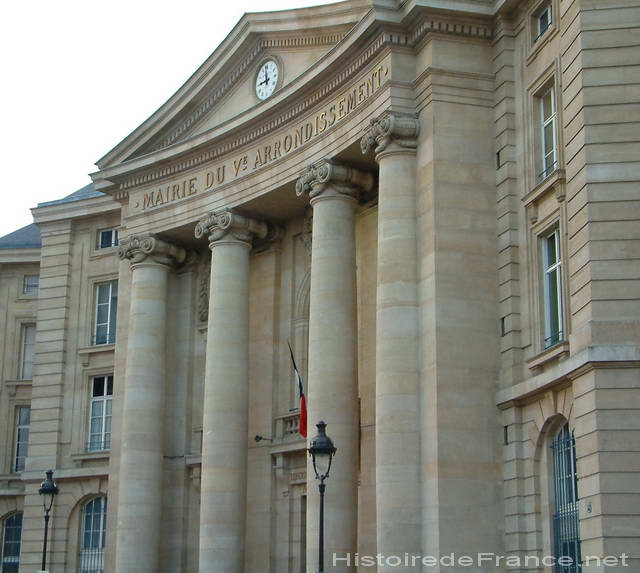
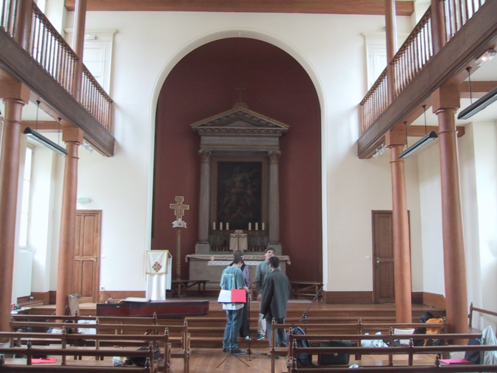

| ◄◄ CLUB PRECEDENT | RETOUR A LA PAGE DE PRESENTATION | CLUB SUIVANT ►► |
| CLUB MUSICA Une petite envie musicale parmi les élèves ou futurs élèves de LLG? Je vous présente Marie, notre merveilleuse organisatrice, Musica: le club qui s'occupe des activités musicales au Lycée, en particulier l'oganisation de l'orchestre et du choeur. Pour les lycéens et les élèves de prépa, la musique peut constituer une pause favorable au sein du cursus scolaire exigeant: les répétitions hebdomadaires sont toujours agréables et reposantes, en plus d'offrir une pratique musicale régulie même hors du conservatoire. Le club est ouvert à tous les musiciens motivés quel que soit leur niveau y compris les anciens élèves, professeurs et parents d'élèves du Lycée. Les activités principales du club sont l'orchestre symphonique et le choeur sous la direction d'élèves en cursus professionnel des conserrvatoires supérieurs de Paris et de Lyon. Dans le cadre le plus libre, Musica permet aux élèves l'accès des salles de répétition et organise régulièrement des Heures musicales, concerts libres de musique de chambre dans la chapelle A Noël et au Printemps, nous donnons des concerts à la Mairies du Vème et à la Sorbonne avec un programme d'orchestre, choeur et musique de chambre. JOUR : Jeudi soirLIEU : Chapelle de LLGCONTACT : musica.llg@gmail.com |
|  |  |